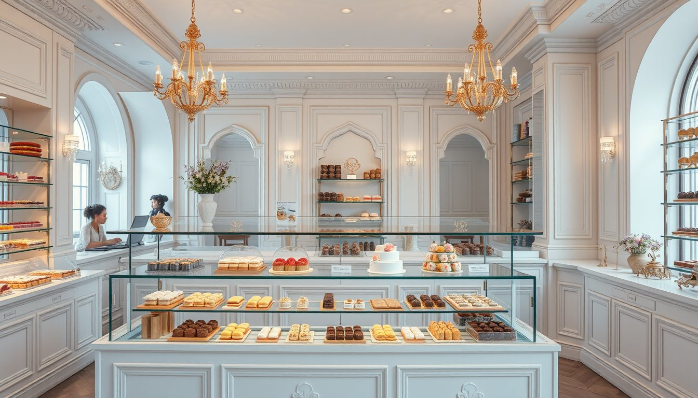
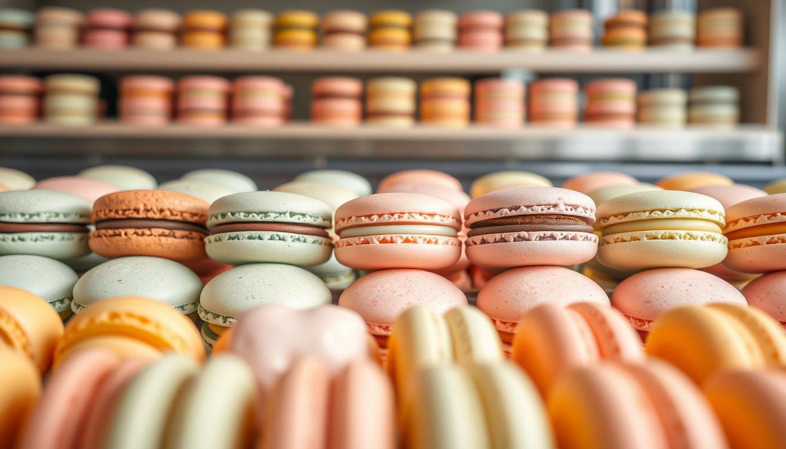
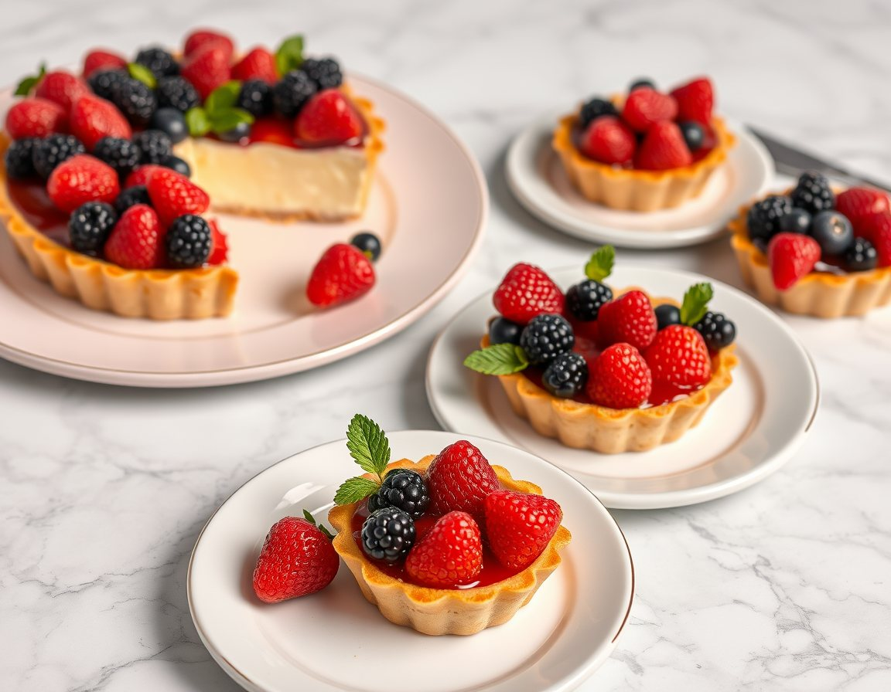
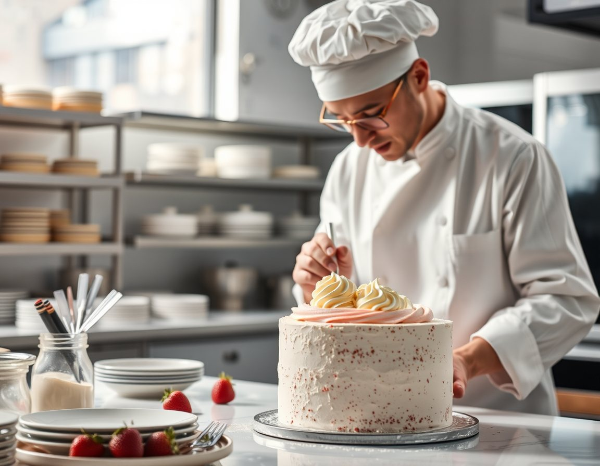

Vitrin tabağı
Günün dört mini tatlısı, iki kişilik.

Vitrindekiler her sabah 09:00'da hazır; öğleden sonra bitenler olabilir. Günlük liste Instagram hikâyemizde.

Günün dört mini tatlısı, iki kişilik.

Fıstık, gül, frambuaz, limon, vanilya, çikolata.

Vanilyalı krema, mevsim meyvesi.

Günün pastası; kutuda paket.

Cumartesi 14:00, 6 kişilik grup.
“Şekeri azaltıp tereyağını artırırsanız pasta tatlı değil, lezzetli olur.”
— Elif Hanım, pasta şefi ve atölyenin kurucusu
Makaron ve dilim pasta kutuları el yazısı notla hazırlanır. Denizli merkez içine aynı gün teslimat.